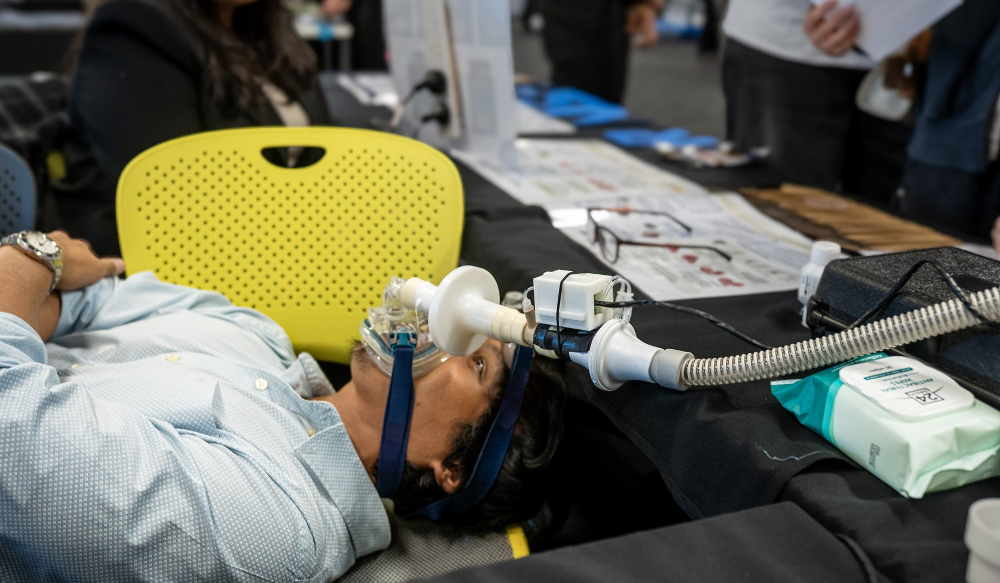
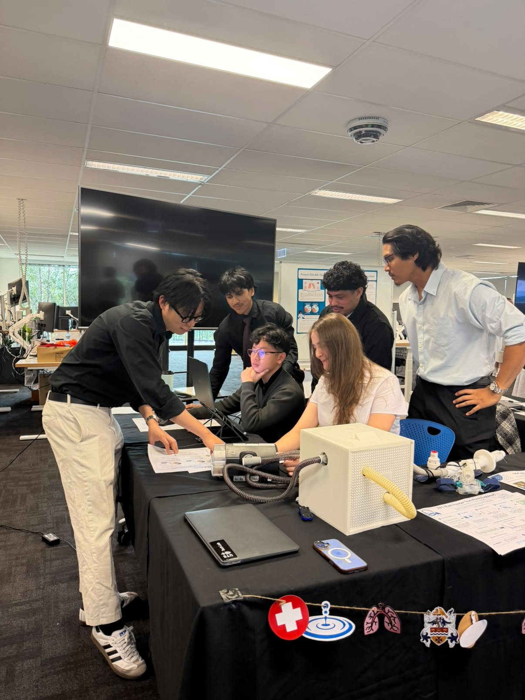
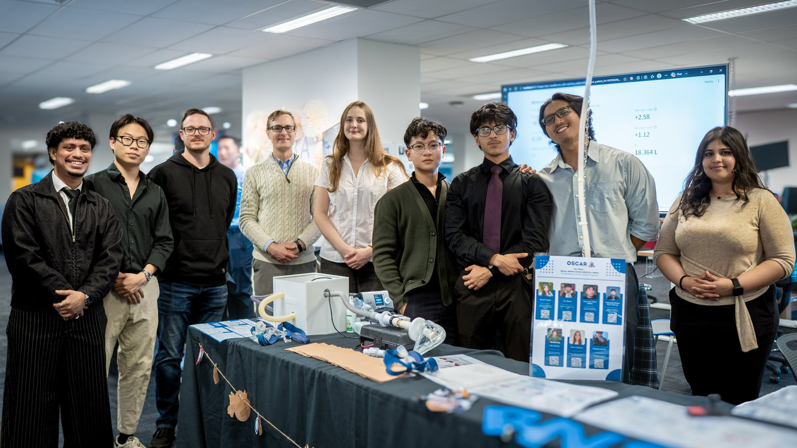

Two earlier student groups had tried this problem for the hospital and failed for basic reasons. Genuine electrical capability was the bottleneck, and that is what I was there to supply.
The device applies a Forced Oscillation Technique signal on top of non-invasive ventilation and measures respiratory impedance while the patient breathes normally, so that expiratory flow limitation in COPD can be detected without interrupting therapy. I built the excitation firmware and the measurement engine that turns pressure and flow signals into respiratory resistance and reactance, selected and bench verified the differential pressure transducer against its amplitude and phase response, and developed the calibration methodology.
It is the first working measurement a student group has brought back to the hospital on this problem. I demonstrated it to the clinical team and told them directly that the patient side measurement was not yet accurate enough, and why.


